🎓 DIP Class Test Mastery: Complete Slide Deck
Guaranteed 10/10 Class Test Study System
Presentation Slide Mode • Use ← → or Spacebar to flip slides • Enter slide number above to jump
• 2D Fourier Transform & Centering
• Smoothing LPFs: Ideal, Butterworth, Gaussian
• Sharpening HPFs: Ideal, Butterworth, Gaussian
• Laplacian & High-Frequency Emphasis
• FFT Algorithm & Template Matching
• Image Restoration vs Enhancement
• 6 Noise Probability Density Functions
• Mean Filters: Arithmetic, Geometric, Harmonic, Contraharmonic
• Order Statistics: Median, Max, Min, Midpoint, Alpha-Trimmed
• Periodic Noise & Band-Reject Filters
• Adaptive Median Filter (2-Level AMF)
• Slide 27: Solved 7×7 Blackboard Slide Math Problem
• Slide 32-34: Formula Cheat Sheets & Memory Hooks
• Slide 35-38: 15-Question Interactive Mock Exam
• 32 Original Slide Graphics Embedded
📸 Prerequisites: Digital Images & Frequency Concept
📸 What is a Digital Image?
Mathematically, a 2D image is represented as a 2D intensity function:
- $(x,y)$ are discrete spatial (pixel) coordinates.
- $f(x,y)$ is the intensity (gray level) at that pixel.
- For standard 8-bit images: $f(x,y) \in [0, 255]$ ($0 =$ pure black, $255 =$ pure white).
- Dimensions: $M$ rows (height) × $N$ columns (width).
🌊 What is Frequency in Images?
In audio, frequency is pitch (cycles per second). In images, spatial frequency is the rate of brightness change over distance (pixels):
Slow, gradual brightness changes. Uniform areas (flat sky, skin tone, walls, background). Carries general contrast & lighting.
Rapid, abrupt brightness changes over few pixels. Sharp edges, fine textures, hair, corners & noise!
Core Rule: Filtering out high frequencies = Blurring / Smoothing. Filtering out low frequencies = Edge Sharpening!
⚙️ Prerequisites: Convolution Theorem & Enhancement vs Restoration
🔑 The Convolution Theorem
Spatial filtering slides a mask (kernel) $h(x,y)$ across the image, computing weighted sums at every pixel (convolution):
Profound Meaning: Convolution in the spatial domain is equivalent to simple pointwise multiplication in the frequency domain!
For large kernel masks, computing pointwise multiplication in frequency domain via FFT is orders of magnitude faster than spatial convolution!
🔧 Enhancement vs. Restoration
Professors love asking this fundamental distinction on exams:
| Aspect | Image Enhancement (Slide 7) | Image Restoration (Slide 8) |
|---|---|---|
| Nature | Subjective (heuristic) | Objective (mathematical) |
| Goal | Make image look better to human eye | Recover original scene $f(x,y)$ |
| Model | No degradation model needed | Requires degradation/noise model |
| Technique | Contrast stretch, unsharp mask | Inverse filter, Wiener, AMF |
🔄 Slide 7: The 6-Step Frequency Domain Filtering Protocol
🔄 The 6-Step Protocol (Memorize for Exam!)
- Pre-process (Centering): Multiply input image $f(x,y)$ by $(-1)^{x+y}$ to shift the DC component to $(M/2, N/2)$.
- Compute DFT: Calculate 2D DFT $F(u,v)$ of the centered image.
- Filter Multiplication: Multiply $F(u,v)$ by filter transfer function $H(u,v)$: $$G(u,v) = H(u,v) \cdot F(u,v)$$
- Compute IDFT: Calculate inverse 2D DFT of $G(u,v)$.
- Extract Real Part: $g_r(x,y) = \text{Re}\{\text{IDFT}\}$.
- Post-process (De-centering): Multiply by $(-1)^{x+y}$ to restore original spatial coordinates.
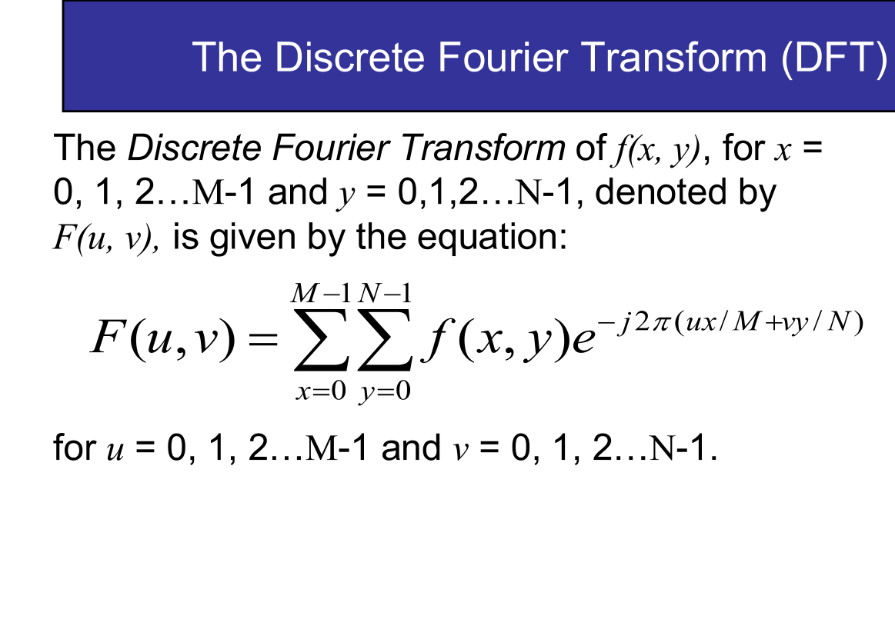
Why $(-1)^{x+y}$? By the Fourier shift theorem, multiplying by $(-1)^{x+y} = e^{j\pi(x+y)}$ shifts the Fourier transform by $(M/2, N/2)$, placing the zero-frequency DC component at the visual center of the spectrum!
📐 The Discrete Fourier Transform (1D & 2D DFT)
1D DFT (Foundation)
For a discrete 1D sequence $f(x)$ of length $N$ ($x, u = 0, 1, \dots, N-1$):
Euler's formula: $e^{j\theta} = \cos\theta + j\sin\theta$. Fourier transform decomposes the signal into sums of orthogonal sines and cosines.
2D DFT (For Digital Images)
For an $M \times N$ digital image $f(x,y)$ ($u=0\dots M-1$, $v=0\dots N-1$):
Separability: 2D DFT can be computed by applying 1D DFT to each row, then 1D DFT to each resulting column!
📊 The Fourier Spectrum, Centering & Distance D(u,v)
📊 Understanding the Fourier Spectrum
Since $F(u,v)$ is complex ($F = R + jI$), we visualize the magnitude (spectrum):
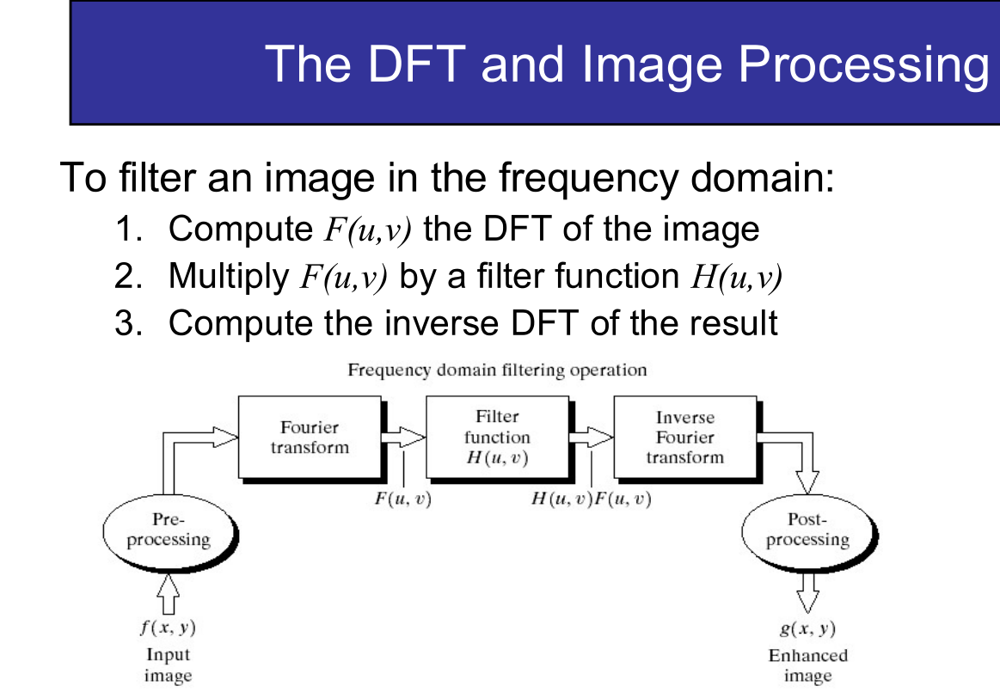
🌊 Low-Pass Filters: Ideal LPF (ILPF) & Ringing Effect
Ideal Low-Pass Filter (ILPF)
Completely passes all frequencies inside circle of radius $D_0$, and completely blocks all frequencies outside:
Gibbs Phenomenon (Ringing): The sharp rectangular cutoff in frequency corresponds to a 2D sinc ($J_1(r)/r$) function in spatial domain. Its concentric ripple lobes create visible ringing halos around edges!
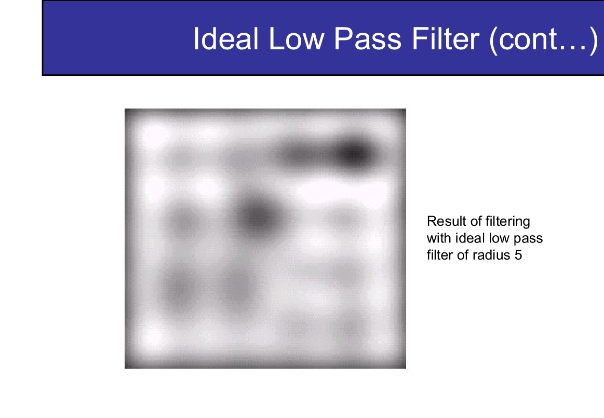
🌊 Butterworth Low-Pass Filter (BLPF)
Butterworth Low-Pass Filter (BLPF)
Provides a smooth transition between passed and filtered frequencies without sharp discontinuities:
Order $n$ behavior:
• At $n=1$: completely smooth roll-off, zero ringing.
• At $n=2$: very mild, negligible ringing.
• As $n \to \infty$: BLPF converges to the Ideal LPF (ringing becomes severe).
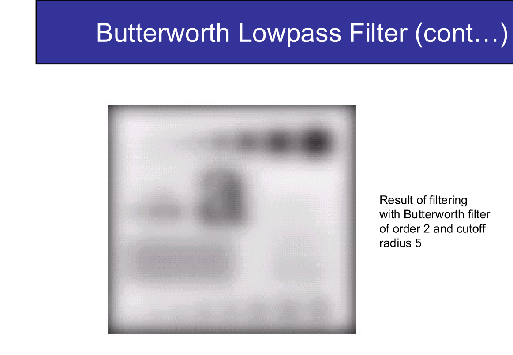
🌊 Gaussian Low-Pass Filter (GLPF)
Gaussian Low-Pass Filter (GLPF)
Uses a 2D Gaussian bell curve as its transfer function:
Why Gaussian NEVER Rings: The inverse Fourier transform of a Gaussian is another Gaussian! Since a spatial Gaussian is purely positive with zero oscillating side-lobes, it is impossible for ringing ripples to appear.
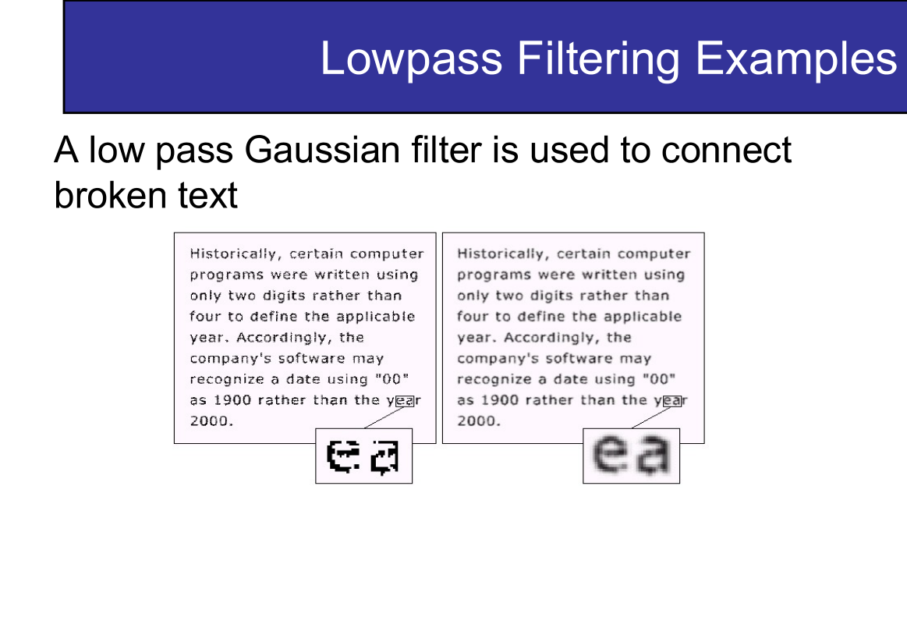
📊 Low-Pass Filters Comparison & Real Applications
| Filter | Formula $H(u,v)$ | Value at $D=D_0$ | Ringing Artefacts | Transition Sharpness |
|---|---|---|---|---|
| Ideal (ILPF) | $1$ if $D \le D_0$, else $0$ | Discontinuity ($1 \to 0$) | Severe (Gibbs ripples) | Infinite (step function) |
| Butterworth (BLPF) | $\dfrac{1}{1 + [D/D_0]^{2n}}$ | $0.5$ (Half power) | None at $n=1,2$; rises with $n$ | Adjustable via order $n$ |
| Gaussian (GLPF) | $e^{-D^2 / (2D_0^2)}$ | $e^{-0.5} \approx 0.607$ | None (Zero ringing) | Smooth exponential bell |
🎯 3 Key LPF Applications (from slides):
- Cosmetic image processing: Smooths skin blemishes, wrinkles, and shadows while preserving major facial facial landmarks.
- Machine-printed character recognition: Blurs jagged edges and repairs broken character strokes so OCR models can classify correctly.
- False contour removal: Smooths quantization steps in heavily compressed images.
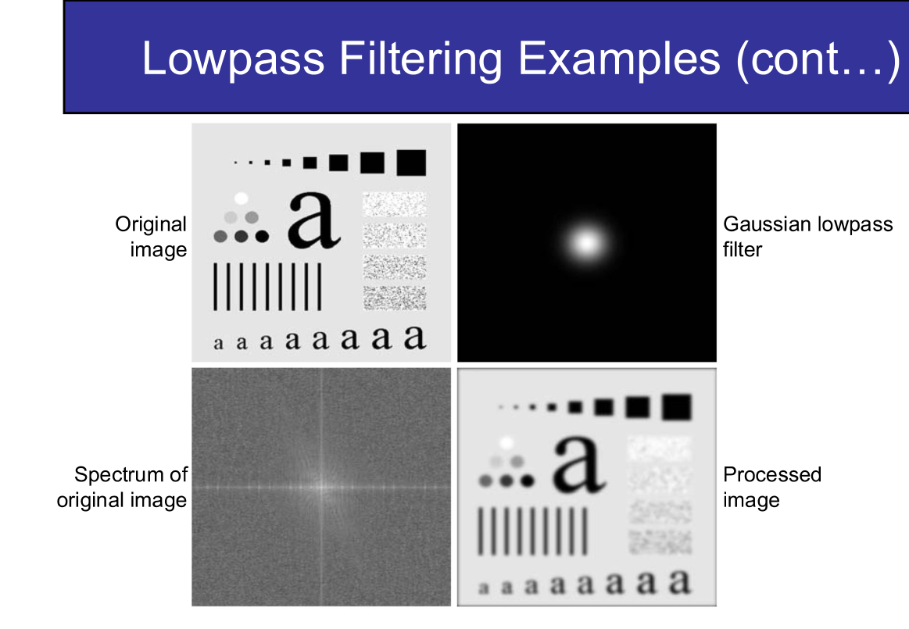
🔪 High-Pass Filters: Core Principle & Ideal HPF
🔑 The Fundamental Complement Rule
A high-pass filter passes the frequencies blocked by a low-pass filter:
DC Suppression: Notice at origin $D(0,0)=0 \implies H_{hp}(0,0)=0$. This completely zeroes out the DC component (average brightness), turning the background dark/grey and preserving only edge spikes!
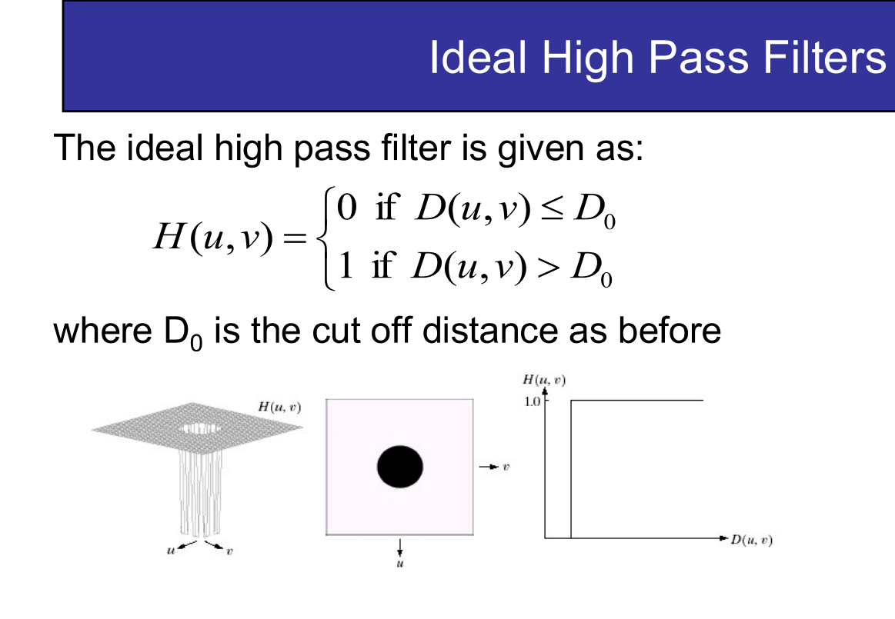
🔪 Butterworth & Gaussian High-Pass Filters
Butterworth HPF (BHPF)
Notice $D_0 / D(u,v)$ is inverted! At $D = D_0$, $H = 0.5$. Order $n$ controls transition steepness.
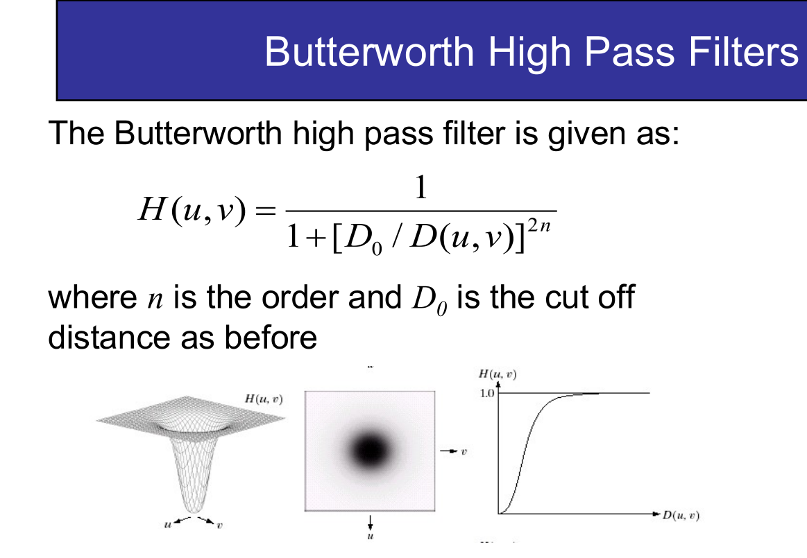
Gaussian HPF (GHPF)
At $D = 0$, $H = 1 - 1 = 0$. At $D = D_0$, $H = 1 - e^{-0.5} \approx 0.393$. Produces smooth, clean edge profiles with zero ringing.
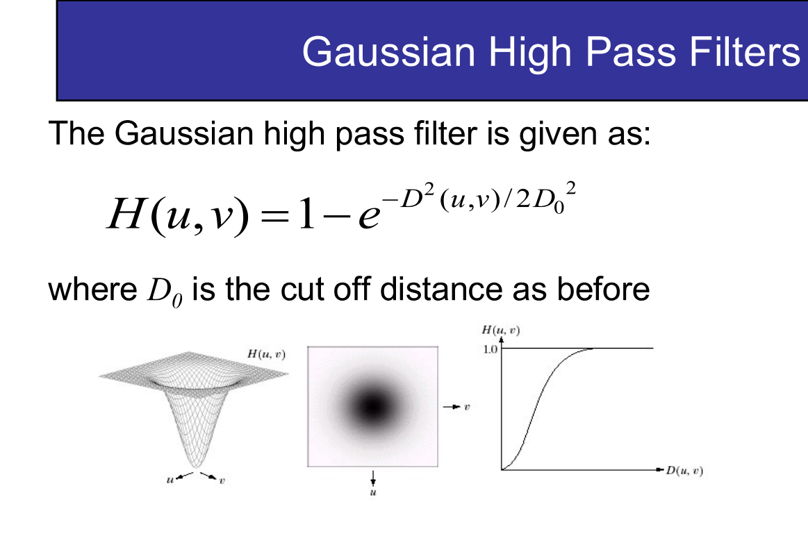
📊 High-Pass Filters Visual Comparison (D₀ = 15)
Visual Analysis: IHPF vs BHPF vs GHPF
- Ideal HPF (top row): Shows severe ringing ripples around all edges and boundaries, creating false phantom contours.
- Butterworth HPF (middle row): Mild transition. Notice edges are sharper than Gaussian, with slight, controlled ringing at higher orders.
- Gaussian HPF (bottom row): Produces the smoothest edges without a trace of ringing ripples. Excellent for edge detection and natural sharpening.
- Cutoff frequency effect: As $D_0$ increases (e.g. 15 to 30 to 80), more low frequencies are blocked $\implies$ only the thinnest, highest-frequency edge contours survive.
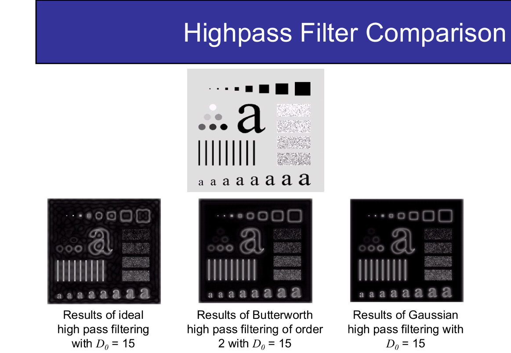
∇² Laplacian in the Frequency Domain
Mathematical Derivation
Spatial Laplacian is the sum of second partial derivatives:
$$\nabla^2 f(x,y) = \frac{\partial^2 f}{\partial x^2} + \frac{\partial^2 f}{\partial y^2}$$By Fourier derivative theorem, differentiation by $x$ is multiplication by $ju$:
$$\mathcal{F}\left\{\frac{\partial^2 f}{\partial x^2}\right\} = (ju)^2 F(u,v) = -u^2 F(u,v)$$Laplacian Image Enhancement
To sharpen an image, we subtract its Laplacian from itself:
$$g(x,y) = f(x,y) - \nabla^2 f(x,y)$$In frequency domain, substituting $H(u,v) = -D^2(u,v)$:
The minus signs cancel! The filter passes the original image with gain 1 and adds the boosted high frequencies ($D^2$) directly.
🫁 High-Frequency Emphasis & Chest X-Ray Case Study
High-Frequency Emphasis Filtering
Standard HPF zeroes the DC term, losing tonality. High-Frequency Emphasis fixes this:
- $a$ is the low-frequency offset (typically $a = 0.5$): keeps overall image lighting!
- $b$ is the high-frequency multiplier (typically $b = 1.5 - 2.0$): dramatically sharpens edges!
- When $H_{hp} \to 0$ (low freq): $H \to a$.
- When $H_{hp} \to 1$ (high freq): $H \to a + b$.
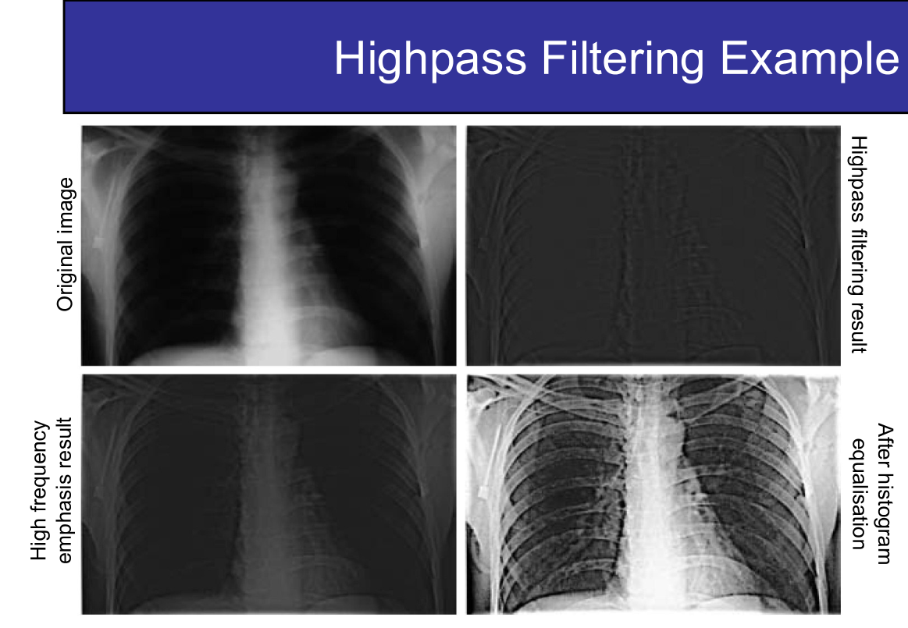
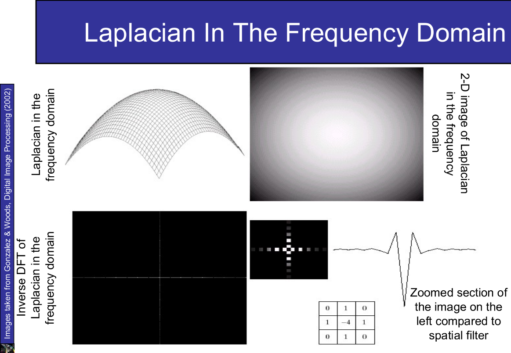
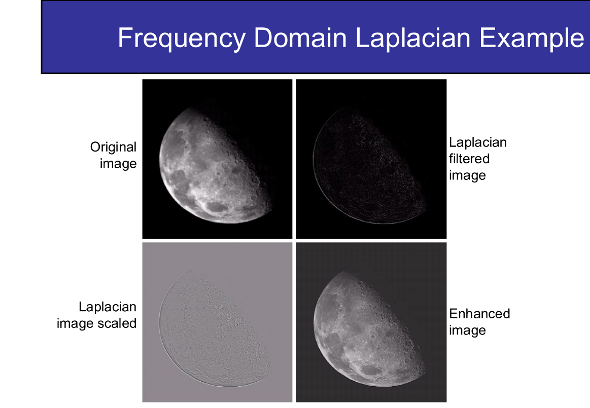
🎯 Lecture Highlight: Template Matching via 2D Correlation
In Slide 7 Pages 64–65, the professor highlights how frequency domain filtering can perform instantaneous template matching (character recognition) using 2D correlation:
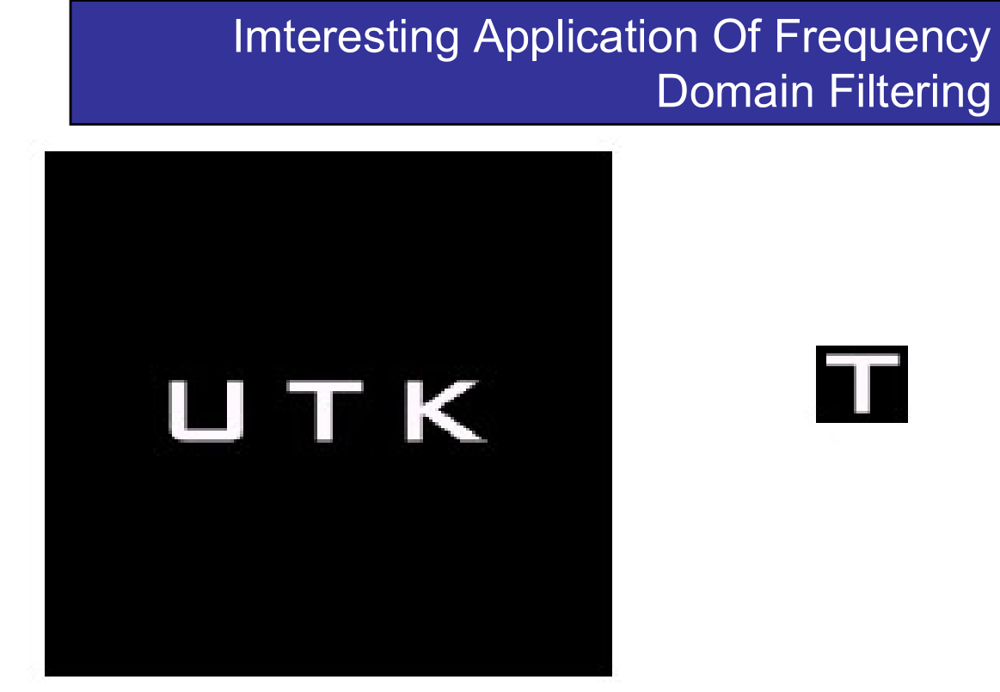
"UTK" and the target template letter "T".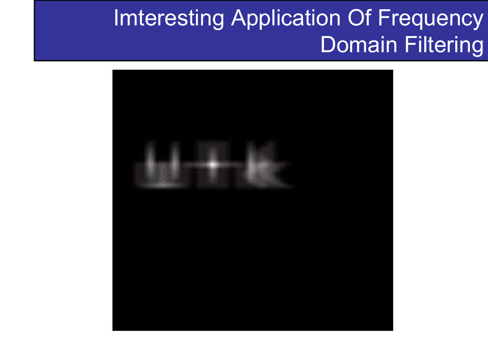
"T"!Where $H^*(u,v)$ is the complex conjugate of the template's Fourier transform. Instead of computationally heavy 2D sliding spatial template matching, you multiply $F(u,v) \cdot H^*(u,v)$ in the frequency domain and compute the IDFT. The highest peak corresponds to the exact match!
⚡ Fast Fourier Transform (FFT) & Summary
⚡ The Fast Fourier Transform (FFT)
Direct computation of 2D DFT requires $M^2 N^2$ complex operations. For $N \times N$, that is $\mathcal{O}(N^2)$ per dimension.
This landmark complexity reduction is the sole reason frequency domain techniques are used in real-time medical imaging, JPEG compression, and computer vision.
⚖️ Frequency Domain vs Spatial Domain
| Aspect | Spatial Domain | Frequency Domain |
|---|---|---|
| Operation | Convolution with small kernel | Pointwise multiplication $F \cdot H$ |
| Intuition | Direct, pixel manipulation | Frequency perspective |
| Speed (Small mask) | Fast for $3\times 3, 5\times 5$ | FFT overhead not worth it |
| Speed (Large mask) | Very slow | Extremely fast via FFT |
| Periodic Noise | Difficult to eliminate | Trivial via Band-Reject/Notch |
🔬 Slide 8: Image Restoration & Degradation Model
🔬 What is Image Restoration?
Unlike enhancement (which is subjective), restoration is an objective process: it attempts to reconstruct an image that has been degraded by using a mathematical model of the degradation phenomenon.
Where $f$ is original image, $h$ is degradation function (blur, motion), $\eta$ is additive noise, and $g$ is the observed degraded image.
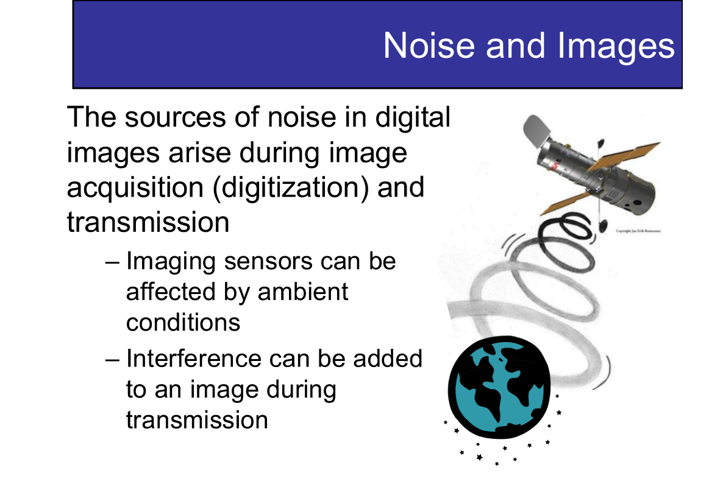
📐 Noise Sources & The 6 Noise PDFs
📡 Sources of Noise in Images
- Image Acquisition (Digitization): Sensor circuit noise, electronic amplifier noise, thermal noise (higher temperature $\implies$ higher noise).
- Transmission: Packet loss, radio interference, atmospheric conditions.
- Light Levels: Low illumination requires high sensor gain, amplifying noise.
When blur $h(x,y)$ is identity, observed image is simply true image plus additive noise $\eta$.
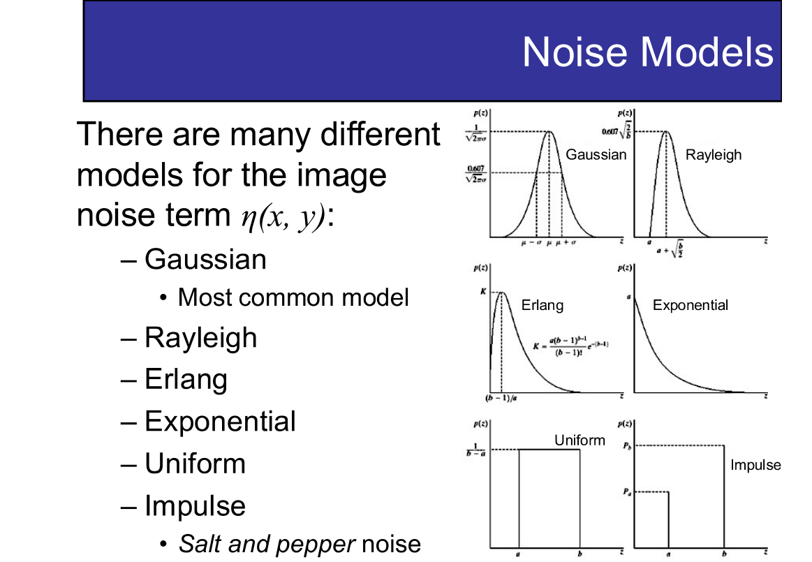
🖼️ Visual Noise Examples & Noise-to-Filter Matrix
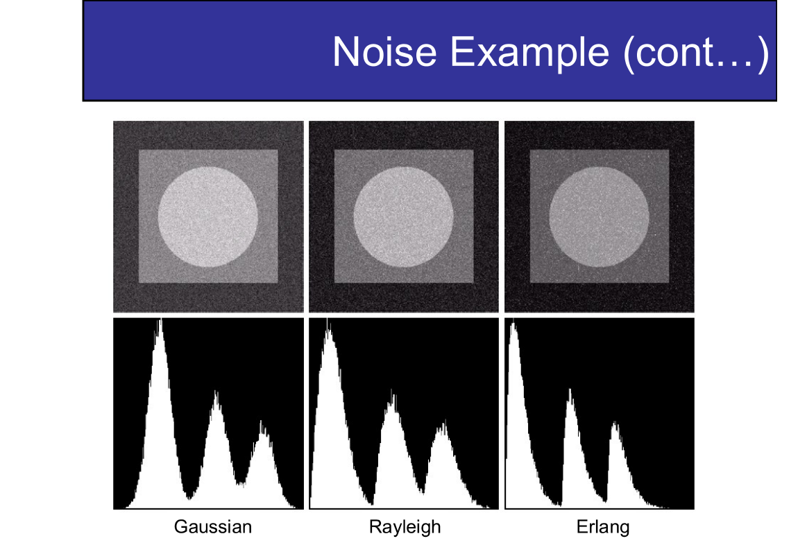
🔑 Master Noise-to-Filter Table (Memorize!):
| Noise Type | Best Spatial Filter | Why it Works |
|---|---|---|
| Gaussian | Arithmetic Mean / Geometric Mean | Averages out zero-mean random fluctuations |
| Salt & Pepper | Median Filter ⭐ | Outliers (0, 255) are discarded by sorting |
| Pepper Only (Dark) | Contraharmonic ($Q > 0$) / Max Filter | Weights brighter pixels, knocks out 0 |
| Salt Only (Bright) | Contraharmonic ($Q < 0$) / Min / Harmonic | Weights darker pixels, knocks out 255 |
| Uniform | Midpoint Filter | Averages symmetric minimum and maximum |
| Mixed (Gaussian + Salt & Pepper) | Alpha-Trimmed Mean Filter | Trims impulse outliers, averages Gaussian residue |
| Periodic | Band-Reject / Notch Filter | Frequency spikes removed in Fourier domain |
📊 Spatial Mean Filters: Arithmetic & Geometric
• Computes average pixel value in $m \times n$ window $S_{xy}$.
• Effective for Gaussian noise.
• Downside: Blurs edges and softens fine image details.
• Multiplies all pixels, then takes the $mn$-th root.
• Achieves similar smoothing to arithmetic mean, but tends to preserve more image detail.
• Danger: A single 0 pixel in window sets entire result to 0!
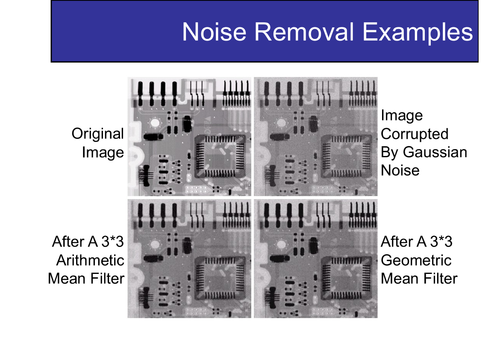
📊 Harmonic & Contraharmonic Mean Filters
If any pixel is 0 (pepper noise), $1/0 \to \infty$ in denominator, so the output becomes 0!
🐉 Contraharmonic in Action & 'Here Be Dragons'
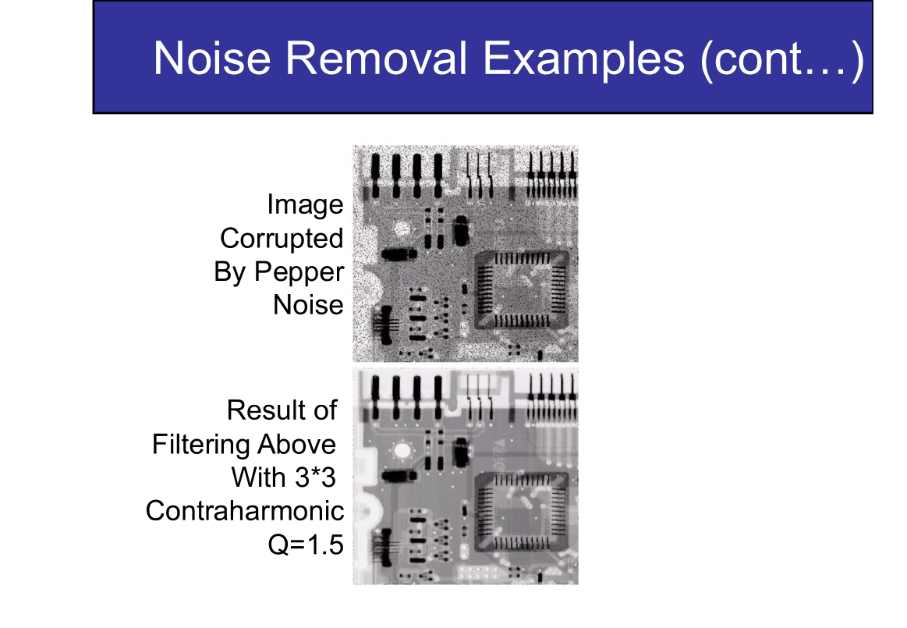
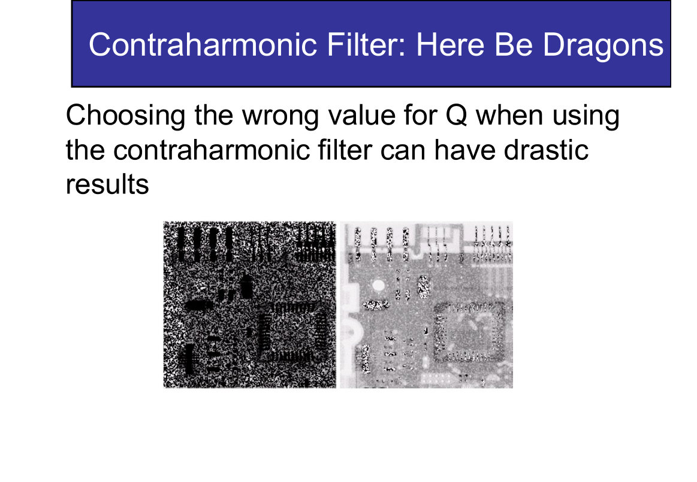
Exam Trap Warning: If an image has SALT noise and you mistakenly use $Q > 0$, the filter will make the salt noise worse (pure white blowout). Always remember: P for Pepper → Positive Q!
📈 Order Statistics Filters: The Median Filter
📈 The Legendary Median Filter ⭐
Sorts all pixel values in neighbourhood $S_{xy}$ in ascending order and takes the middle value:
Why it works so well: Impulse noise pixels are outliers ($0$ or $255$). Sorting automatically pushes them to the extreme left or right of the list. The median selects a real, valid neighborhood pixel, completely discarding the noise!
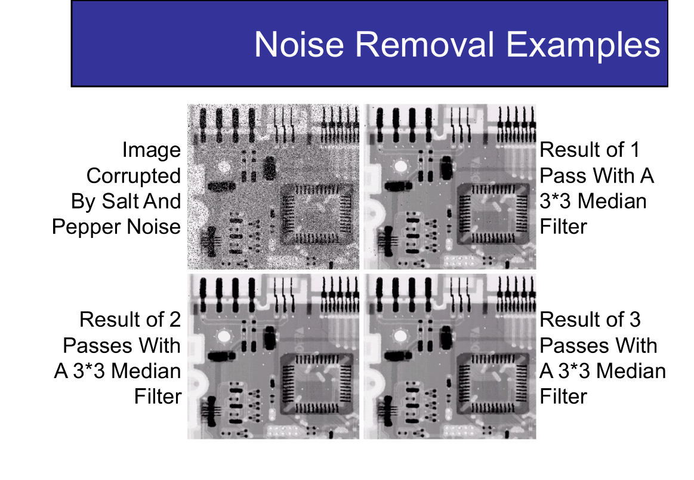
📈 Order Statistics: Max, Min & Midpoint Filters
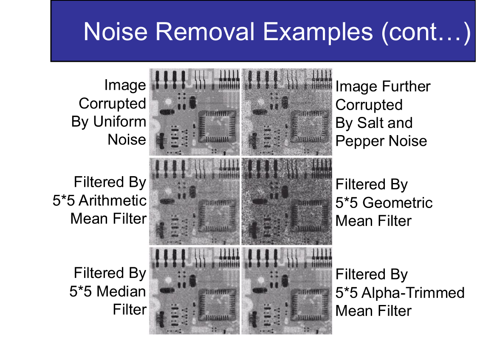
Combines order statistics with averaging. Works best for randomly distributed noise with symmetric distributions like Uniform and Gaussian noise.
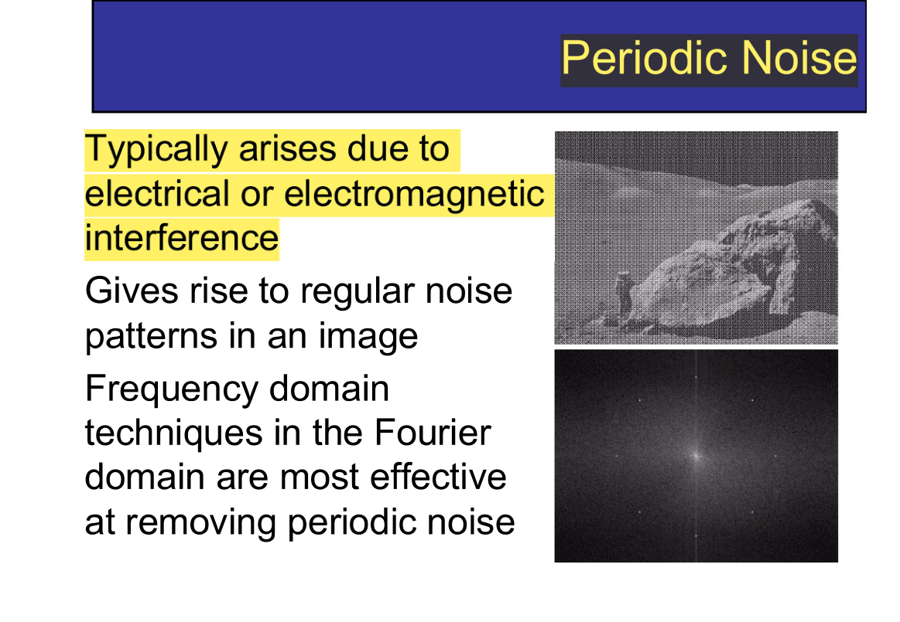
📈 Alpha-Trimmed Mean Filter & Summary
Alpha-Trimmed Mean Filter
Sort all pixels, trim $d/2$ lowest and $d/2$ highest, and average remaining $mn - d$ pixels:
Why it is powerful: If an image has BOTH Gaussian noise AND Salt & Pepper noise, standard mean blurs salt/pepper, and median blurs Gaussian. Alpha-trimmed eliminates the impulse outliers via trimming, then averages the rest to smooth Gaussian noise!
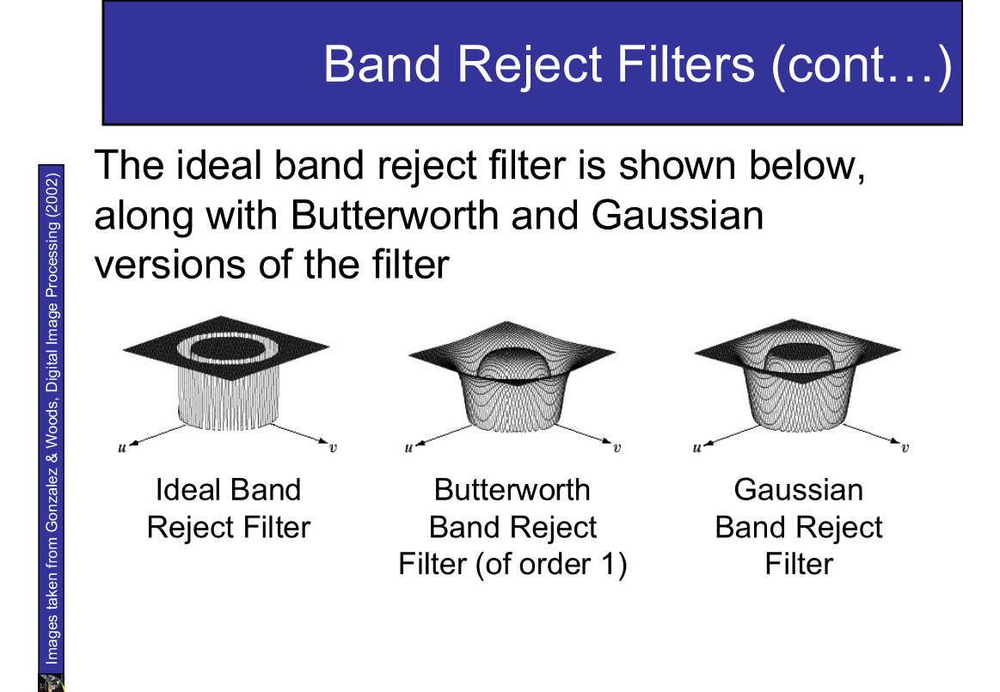
🧮 Exam Math Workshop: The 7×7 Grid Solved Step-by-Step
The Ultimate 10/10 Exam Question! Throughout Slide 8 (Pages 12, 15, 17, 19, 26, 32), the professor repeatedly poses this blackboard problem: a 7×7 image matrix with two clear impulse noise corruptions: a Salt noise pixel (204) at coordinate $(1,2)$ and a Pepper noise pixel (0) at $(4,2)$. Below is the complete interactive step-by-step mathematical walkthrough for every filter!
〰️ Periodic Noise & Frequency Domain Band-Reject Filters
〰️ What is Periodic Noise?
Arises from electrical or electromechanical interference (e.g., power line 50/60 Hz hum, electric motors, unshielded wires, radio transmitters).
- Produces a regular geometric grid/stripe pattern over the image.
- Spatial domain filters struggle to remove periodic noise without destroying real image content.
- Fourier domain reveals periodic noise instantly as concentrated conjugate pairs of bright impulse spikes!
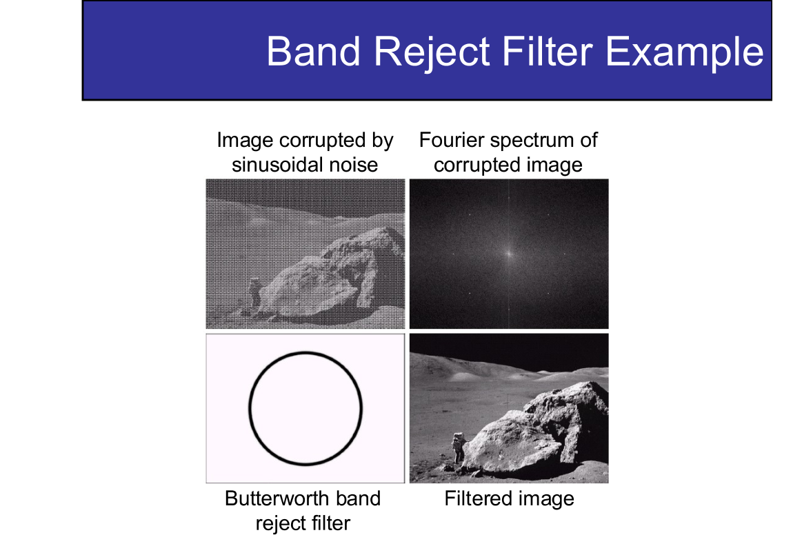
🤖 Adaptive Filters: Why Adaptive & AMF Motivation
🤖 What Makes a Filter 'Adaptive'?
Standard filters apply the exact same formula to every pixel in the image regardless of local characteristics.
Adaptive filters dynamically change their mathematical behavior (and window size!) based on statistical properties inside the local filter region.
Why Standard Median Fails in Dense Noise:
When impulse noise spatial density is high ($> 20\% - 30\%$), it becomes very likely that the median of a $3\times 3$ window is itself a noise pixel! Applying larger fixed windows (like $7\times 7$) removes the noise but smears away fine details and thins lines.
The 3 Core Purposes of AMF (Slide 8 Page 45):
🔄 Adaptive Median Filter: The 2-Level Algorithm
Level A: Is the Median an Impulse?
$A2 = z_{med} - z_{max}$
If $A1 > 0$ and $A2 < 0$:
→ (Median is NOT an impulse!) → Go to Level B
Else:
Increase window size
If window size $\le S_{max}$:
Repeat Level A
Else:
Output $z_{med}$
Level B: Is the Center Pixel an Impulse?
$B2 = z_{xy} - z_{max}$
If $B1 > 0$ and $B2 < 0$:
→ (Center pixel is clean, NOT an impulse!)
→ Output $z_{xy}$ (Keep original detail!)
Else:
→ (Center pixel IS an impulse noise!)
→ Output $z_{med}$ (Replace with clean median!)
📋 Adaptive Median Filter in Action & Summary
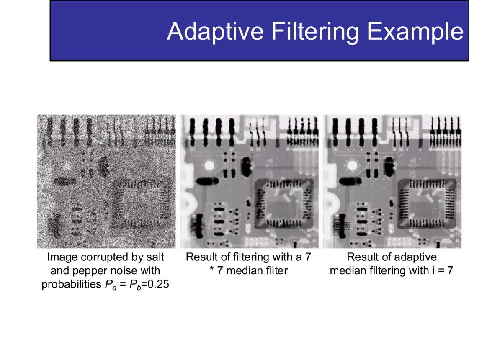
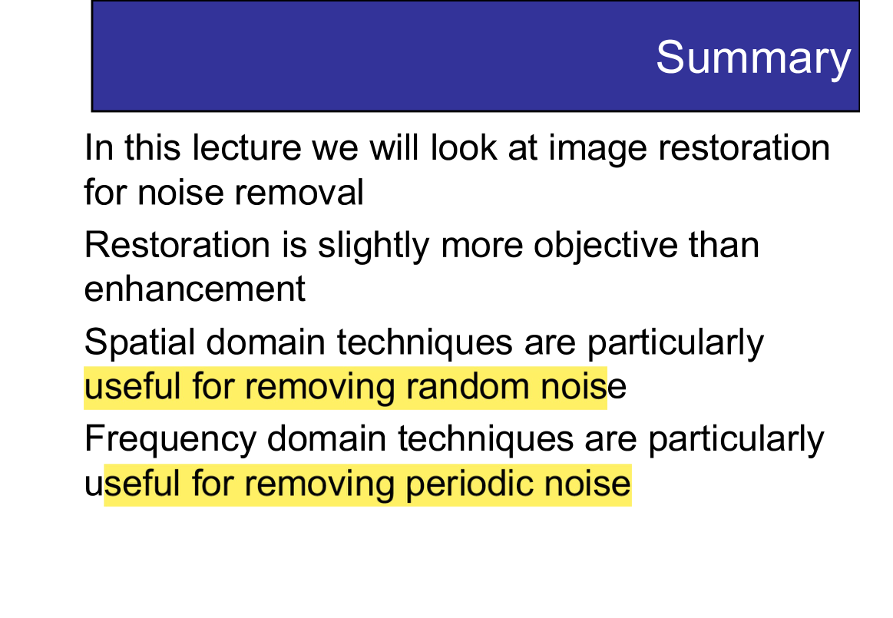
🔵 Master Cheat Sheet: Slide 7 Formulas at a Glance
| Concept | Formula / Transfer Function | Key Notes for Exam |
|---|---|---|
| 1D DFT | $F(u) = \frac{1}{N} \sum_{x=0}^{N-1} f(x) e^{-j 2\pi ux / N}$ | $u = 0, \dots, N-1$ |
| 2D DFT | $F(u,v) = \frac{1}{MN} \sum_x \sum_y f(x,y) e^{-j 2\pi (ux/M + vy/N)}$ | Separable into row 1D DFT then column 1D DFT |
| Centering | Multiply $f(x,y)$ by $(-1)^{x+y}$ | Shifts DC to $(M/2, N/2)$ |
| DC Component | $F(0,0) = \frac{1}{MN} \sum \sum f(x,y)$ | Equal to average image brightness |
| Distance | $D(u,v) = \sqrt{(u - M/2)^2 + (v - N/2)^2}$ | Radius from centered origin |
| Ideal LPF | $H = 1$ if $D \le D_0$, else $0$ | Severe ringing (Gibbs phenomenon) |
| Butterworth LPF | $H = \dfrac{1}{1 + [D/D_0]^{2n}}$ | At $D_0$: $H = 0.5$; $n=1$ has no ringing |
| Gaussian LPF | $H = e^{-D^2 / (2D_0^2)}$ | At $D_0$: $H \approx 0.607$; 100% ringing-free |
| HPF from LPF | $H_{hp}(u,v) = 1 - H_{lp}(u,v)$ | Zeroes DC: $H(0,0) = 0$ |
| Butterworth HPF | $H = \dfrac{1}{1 + [D_0/D]^{2n}}$ | Inverted ratio $D_0/D$ |
| Gaussian HPF | $H = 1 - e^{-D^2 / (2D_0^2)}$ | Smooth, ringing-free edges |
| Laplacian | $H(u,v) = -D^2(u,v)$ | Enhancement: $H_{enh} = 1 + D^2(u,v)$ |
| High-Boost | $H_{hfe} = a + b \cdot H_{hp}(u,v)$ | $a \approx 0.5$ preserves DC, $b \approx 2$ sharpens |
| FFT Complexity | $\mathcal{O}(N \log_2 N)$ | $100\times - 600\times$ faster than $\mathcal{O}(N^2)$ |
🟣 Master Cheat Sheet: Slide 8 Formulas at a Glance
| Filter | Mathematical Formula | Best Used For / Exam Gotchas |
|---|---|---|
| Arithmetic Mean | $\hat{f} = \frac{1}{mn}\sum g(s,t)$ | Gaussian noise; blurs edges |
| Geometric Mean | $\hat{f} = [\prod g(s,t)]^{1/mn}$ | Gaussian noise; preserves slightly more detail than arithmetic; fails if any pixel is 0 |
| Harmonic Mean | $\hat{f} = \frac{mn}{\sum \frac{1}{g(s,t)}}$ | Salt noise; FAILS on pepper noise ($1/0 \to \infty$) |
| Contraharmonic | $\hat{f} = \frac{\sum g^{Q+1}}{\sum g^Q}$ | $Q>0$ for Pepper; $Q<0$ for Salt; $Q=0 \to$ Arithmetic; $Q=-1 \to$ Harmonic |
| Median Filter | $\hat{f} = \text{median}\{g(s,t)\}$ | Salt & Pepper noise; zero blurring; preserves edges |
| Max Filter | $\hat{f} = \max\{g(s,t)\}$ | Eliminates Pepper (dark) noise |
| Min Filter | $\hat{f} = \min\{g(s,t)\}$ | Eliminates Salt (bright) noise |
| Midpoint Filter | $\hat{f} = \frac{1}{2}[\max + \min]$ | Uniform & Gaussian noise |
| Alpha-Trimmed | $\hat{f} = \frac{1}{mn-d}\sum g_r(s,t)$ | Mixed noise (Salt & Pepper + Gaussian); $d=0 \to$ Mean; $d=mn-1 \to$ Median |
| Adaptive Median | Level A (window size) + Level B (pixel replace) | Dense impulse noise ($>20\%-50\%$); preserves thin lines |
| Band-Reject | $H_{br}(u,v)$ in Fourier domain | Periodic noise (removes conjugate frequency spikes) |
🧠 10/10 Exam Memory Tricks & Golden Rules
Slide 7 Golden Rules:
- 🧱 Brick wall = Ringing: Any filter with an abrupt step discontinuity in the frequency domain (like ILPF or high-order BLPF) WILL cause ringing ripples in the spatial domain.
- 🔔 Gaussian is Invariant: The Fourier transform of a Gaussian is another Gaussian → GLPF and GHPF have ZERO ringing!
- 🎯 Cutoff Points: Butterworth cuts at $H = 0.5$ (half-power); Gaussian cuts at $H = e^{-0.5} \approx 0.607$.
- 🌓 Complement Rule: $H_{hp} = 1 - H_{lp}$. Because $H(0,0)=0$, pure HPFs erase the DC component and leave a dark gray background.
- ⚡ Laplacian Plus Sign: $g = f - \nabla^2 f \Longleftrightarrow H = 1 - (-D^2) = 1 + D^2$.
Slide 8 Golden Rules:
- 🌶️ P for Pepper → Positive Q: Contraharmonic with $Q > 0$ destroys Pepper noise. Negative $Q$ destroys Salt noise.
- 💀 Harmonic Pepper Crash: Never use Harmonic mean or Geometric mean on pepper noise — zeroes in the window cause division by zero or a complete black-out!
- 🛡️ Median is an Existing Pixel: Median does not compute new intermediate values; it picks an actual neighbor, keeping boundaries crisp.
- 🎛️ AMF Hierarchy: Level A tests if the median is noise. Level B tests if the center pixel is noise.
- 🌐 Domain Strategy: Spatial domain for random noise; Frequency domain (Band-Reject/Notch) for periodic noise.
🎯 Mock Class Test: Questions 1 – 5
🎯 Mock Class Test: Questions 6 – 10
🎯 Mock Class Test: Questions 11 – 15
🏆 Mock Exam Score, Evaluation & Final Checklist
Your Class Test Readiness
- ✓ Know the 6-Step Frequency Filtering Protocol by heart (Slide 4).
- ✓ Know the ILPF, BLPF, and GLPF formulas and ringing behaviors (Slides 7–9).
- ✓ Know the High-Pass complement rule $H_{hp} = 1 - H_{lp}$ and High-Boost $a + b \cdot H_{hp}$ (Slides 11–15).
- ✓ Know why Harmonic Mean fails on Pepper noise ($1/0 \to \infty$) (Slide 22).
- ✓ Know Contraharmonic $Q$ signs: $Q > 0$ for Pepper, $Q < 0$ for Salt (Slide 22–23).
- ✓ Understand the 7×7 blackboard calculations for both 204 and 0 (Slide 27).
- ✓ Memorize the 2-level logic of Adaptive Median Filter (AMF) (Slide 30).